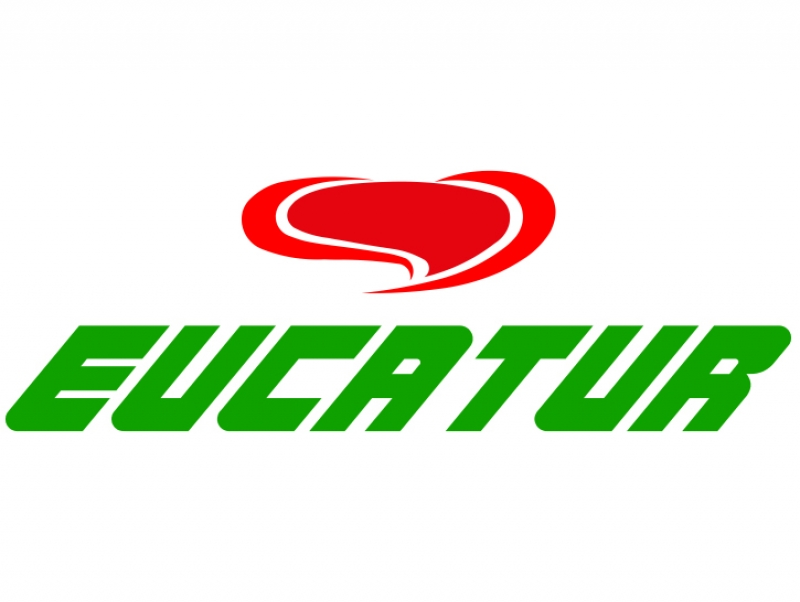

Quem Somos: somos uma empresa com mais 60 anos de muita história, com muitos quilômetros percorridos ao longo destas décadas para proporcionar encontros e reencontros. Operando nos estados do Rio de Janeiro, São Paulo, Paraná, Santa Catarina e Rio Grande do Sul, temos a missão de oferecer a nossos clientes uma viagem segura e confortável, para que cada momento a bordo seja uma experiência memorável.
Guia do Passageiro
Quem Somos: fundada em 1985,A Catedral Turismo (atualmente Viação Catedral) é hoje uma das mais respeitadas empresas no segmento de transporte rodoviário de passageiros com linhas regulares Interestaduais atuando fortemente em 12 estados brasileiros (São Paulo, Minas Gerais, Goiás, Tocantins, Bahia, Piauí, Ceará, Rio Grande do Norte, Paraíba, Pernambuco, Alagoas, Sergipe) mais o Distrito Federal, além de atuar com turismo e fretamento.
Guia do Passageiro
Quem Somos:Fundada em 1964, a Eucatur iniciou com a linha que liga Cascavel/PR a Santa Tereza/PR. Atualmente atende milhares de passageiros com oferta de horários de ônibus para grande parte do território nacional e também linhas internacionais para Venezuela e Bolívia. A viação pertence ao Grupo Eucatur junto com a Nova Integração.
Quem Somos: Fundada em 1964, a Eucatur iniciou com a linha que liga Cascavel/PR a Santa Tereza/PR. Atualmente atende milhares de passageiros com oferta de horários de ônibus para grande parte do território nacional e também linhas internacionais para Venezuela e Bolívia. A viação pertence ao Grupo Eucatur junto com a Nova Integração.
Guia do Passageiro
Quem Somos: com mais de 80 anos de tradição, a União Transportes é sinônimo de qualidade no transporte de passageiros. Atuamos em diversas regiões do Brasil, sempre com o foco em proporcionar viagens seguras e confortáveis para todos os nossos clientes.
Guia do Passageiro
Quem Somos: A Princesa do Norte é uma empresa brasileira de transporte rodoviário fundada em 1949, com sede em Santo Antônio da Platina, no Paraná. Ela se destaca principalmente pelo transporte de passageiros entre cidades do Sul e Sudeste do Brasil, operando rotas em estados como São Paulo, Paraná, Santa Catarina e até Mato Grosso do Sul.

Quem Somos:A Expresso Itamarati é uma empresa brasileira de transporte rodoviário fundada em 1951, com sede em São José do Rio Preto, São Paulo. Conhecida pela sua forte presença nas regiões Centro-Oeste e Sudeste, a Itamarati conecta estados como São Paulo, Mato Grosso, Goiás e Mato Grosso do Sul, oferecendo também rotas para cidades do Norte e interior do Brasil.

Quem Somos:A Unesul de Transportes é uma empresa brasileira fundada em 1964, com sede em Porto Alegre, Rio Grande do Sul. Ela é amplamente reconhecida por suas operações de transporte rodoviário de passageiros e encomendas na região Sul do Brasil, especialmente nos estados do Rio Grande do Sul, Santa Catarina e Paraná.
Quem Somos:Fundada em 1955, a Viação Ttl atende milhares de passageiros ao ano. Sua frota opera com horários de ônibus para diversos municípios das regiões Sul e Sudeste do Brasil, além de destinos internacionais.

Quem Somos: A FlixBus é uma empresa de transporte rodoviário que oferece viagens acessíveis e confortáveis, com foco em tecnologia e sustentabilidade. No Brasil, a FlixBus opera linhas para diversas regiões, incluindo Belo Horizonte, Bahia, Goiás, Brasília, Natal, Recife, Minas Gerais, Pernambuco, Ceará, Sergipe e Alagoas. A empresa facilita a compra de passagens online e oferece serviços como Wi-Fi gratuito a bordo.

Quem Somos:Fundada no dia 15 de julho de 1965 e conhecida como a Empresa de Transportes Macaubense, a Emtram iniciou suas operações com apenas dois ônibus, que faziam a ligação entre o interior da Bahia e São Paulo. O transporte regular da empresa cresceu junto com a demanda ao longo do tempo por mão-de-obra no sudeste e nas grandes capitais, realizando o transporte regular entre os municípios da Bahia. Com o passar das décadas, a empresa obteve o direito de explorar diferentes rotas interestaduais, que passam pelos estados da Bahia, Minas Gerais, Rio de Janeiro, São Paulo, Goiás, Distrito Federal e Sergipe (Viatran). Além de operar em linhas intermunicipais de Bahia a Tocantins, a viação Emtram é responsável pelo transporte semiurbano do estado baiano.
Guia do Passageiro
Quem Somos: Há décadas, percorrer as grandes distâncias no Oeste Paulista era uma tarefa árdua para muitos trabalhadores, que frequentemente faziam o caminho a pé. Foi para mudar essa realidade que, no dia 5 de junho de 1948, nasceu a Andorinha. No início, a demanda era atendida com uma jardineira, comprada por José Lemes Soares, fundador da empresa. Mas, com o passar do tempo, as tradicionais jardineiras foram substituídas de forma gradual por ônibus cada vez mais modernos, que ampliaram a área de atuação e o conforto oferecido aos passageiros.

Quem Somos: Viajar não é só nosso serviço. É nosso sonho, nossa vida, nossa maior paixão. Há décadas, nosso objetivo é conectar pessoas pelo Brasil. Diminuímos a distância entre as famílias, juntamos o casal apaixonado, conectamos o mochileiro ao comerciante local e você ao seu trabalho. Cada história de viagem é única e diferente. Cada passageiro e cada quilômetro rodado tem um motivo e uma conquista por trás. Imaginem quantas histórias contamos em mais de meio século de vida, dezenas de milhões de passageiros transportados e um bilhão de quilômetros rodados. O segredo de todo esse tempo na estrada é simples: estamos sempre em constante melhora para oferecer para você, nosso parceiro e amigo, uma rota segura, confortável e inesquecível rumo ao seu destino. Por que o seu sonho é viajar. O nosso é te levar. Você sonha, a Estrela guia! Pra toda rota, Roderotas!

Quem Somos:Fundada em 1996, a viação Satélite Norte oferece horários de ônibus nos estados do Mato Grosso, Goiás, Distrito Federal, Tocantins, Maranhão, Pará, Piauí e Ceará. A Satélite Norte comercializa passagens de ônibus para cidades como Goiânia, Belém, Brasília, Teresina, Fortaleza, Anápolis e muitos outros destinos.